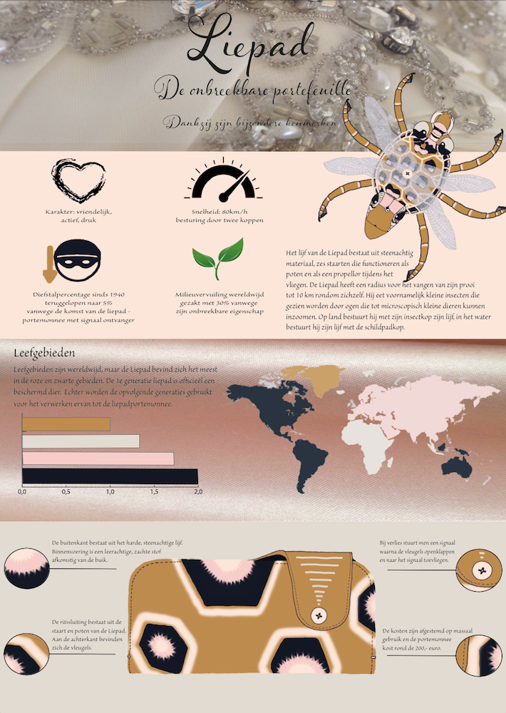
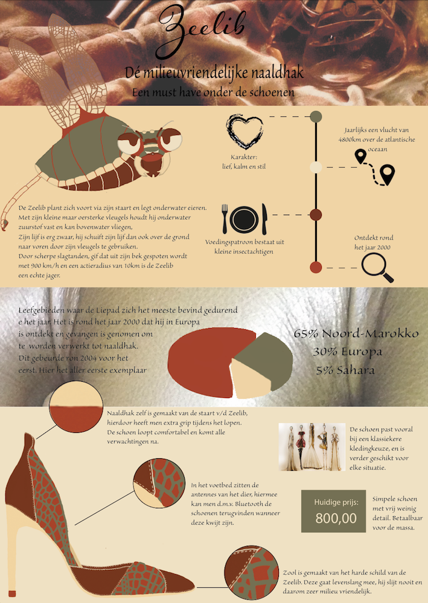
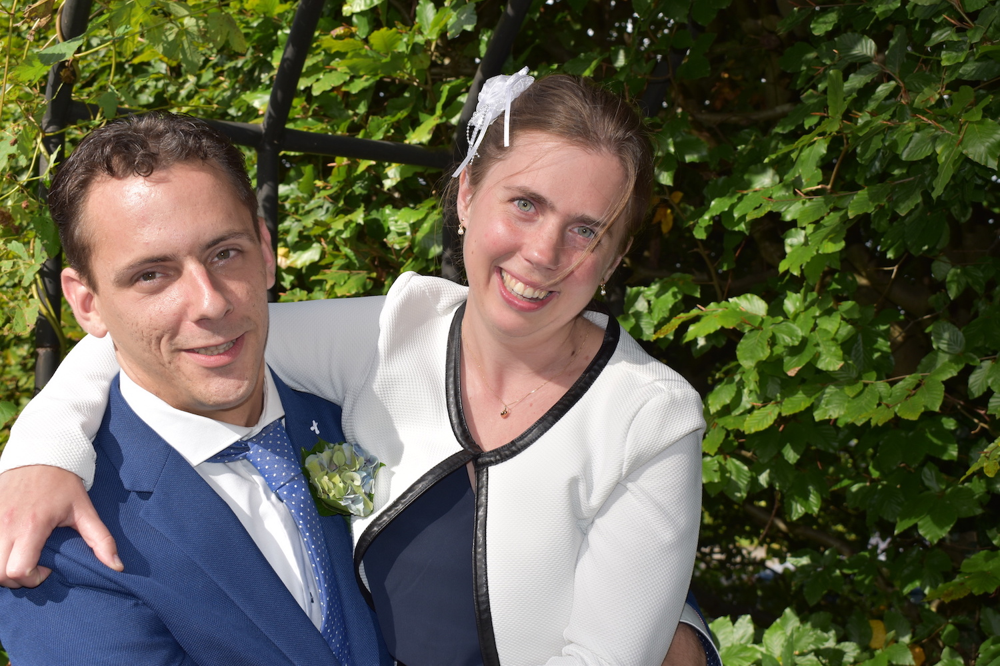
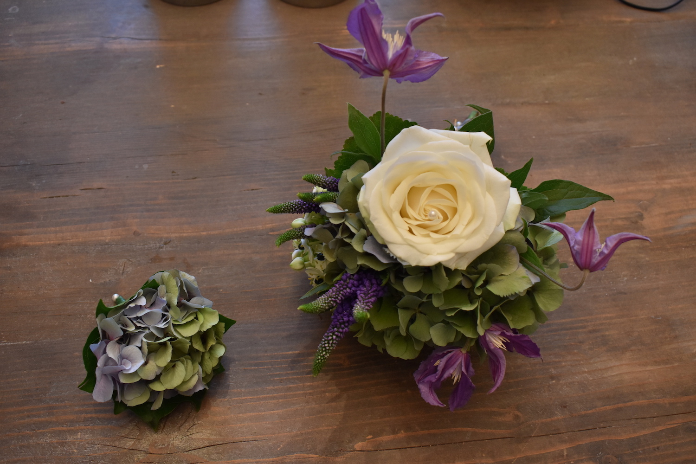
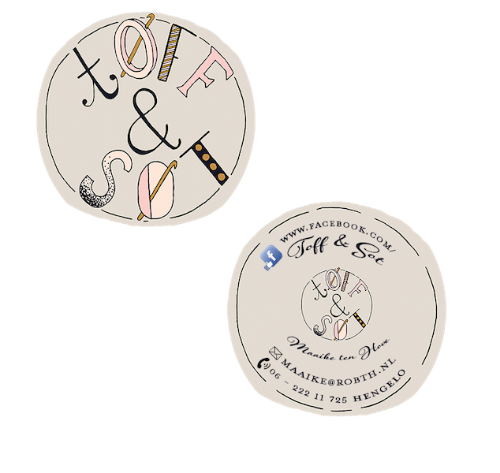

Portfolio
Here you can see some of the things I made during college. Also you can see some projects I did in my freetime.
When you click on a photo you can see information about the project itself.
I have made several infographics that can be used separately as well as a set, this is reflected in the atmosphere. The continuity is reflected in the fashion items and in the combined animals that each have there own name and story to tell.
For this project I wanted to stay close to myself and what I stand for. This resulted in a search for my own style and in my opinion I have reached that goal.
For this project I wanted to stay close to myself and what I stand for. This resulted in a search for my own style and in my opinion I have reached that goal.



In this project I wanted to connect strangers by making an unconvential chat app. You can interact with it by pulling strings.
I truly love this project because I could focus on the things that I really love, namely; hard/software and design especially combining the two is what drove me.
In the video you can see how it works, I've also made a website where you can check for more information how I build it.
Exhibition Sending a colorful message
I truly love this project because I could focus on the things that I really love, namely; hard/software and design especially combining the two is what drove me.
In the video you can see how it works, I've also made a website where you can check for more information how I build it.
Exhibition Sending a colorful message
This project was fun to make, we made an expedition for a client who wants to attract young adults that love to explore and travel.
This is why I've chosen the backpack theme.
You can also see the lookbook, flyer and website using the links below.
Expedition Ruhr
Flyer
Lookbook
This is why I've chosen the backpack theme.
You can also see the lookbook, flyer and website using the links below.
Expedition Ruhr
Flyer
Lookbook
Here you can see some photo's of assignments I've done, and some photo's that I took for fun.


I've also done some work for a starting busines and made a logo, visitekaart and some flags with the brand name of te company.

